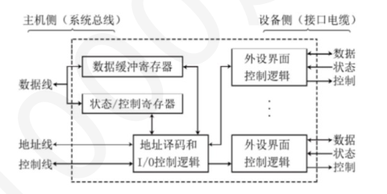

第 1 题
总线的基本功能不包括（ ）。
A． 数据传输 B． 地址传输 C． 控制信号传输 D． 数据存储 答案与解析 答案：D
总线的基本功能是实现部件之间的数据传输、地址传输和控制信号传输，而数据存储是存储器的功能，D错误。
教材第 104 页 第 2 题
CPU 内部线路通常采用总线连接方式。总线上，信号流动的原则是（ ）。 I．每个时刻只有1 个器件发出信息II．每个时刻有1 个或多个器件发出信息III．每个时刻只有1 个器件接收信息IV．每个时刻有1 个或多个器件接收信息
A． I、III B． I、IV C． II、III D． II、IV 答案与解析 答案：B
CPU内部线路采用总线连接方式时，总线上信号流动的原则为：每个时刻只有1个器件发出信息，每个时刻有1个或多个器件接收信息，B正确。
教材第 104 页 第 3 题
总线中，有些信息是单向传输的，有些信息是是双向传输的，下列说法中，正确的是（ ）。
A． 数据信息是单向传输的，由内存或者外设传送至CPU B． 地址信息是单向传输的，由CPU 发送至内存或者外设 C． 控制信息是单向传输的，由CPU 发送至内存或者外设 D． 状态信息是双向传输的，由CPU 发送至内存或者外设，也可反向 答案与解析 答案：B
在总线中，数据总线是双向传输的，数据信息可由CPU传送至内存或外设，也可由内存、外设传送至CPU，A错误。地址总线是单向传输的，地址信息只能由CPU发送至内存或者外设，B正确。控制信息可以双向传输，但是一根控制线通常只传一类控制信号，且方向固定，比如读写命令是CPU 传给内存或者外设（I/O 接口），外设（I/O 接口）传输握手信号和中断请求信号给CPU，C 错误。状态信息是单向传输的，通过状态总线由内存或外设发送至CPU，D错误。
教材第 104 页 第 4 题
某总线在一个总线周期中并行传送4 字节的数据，假设一个总线周期等于一个总线时钟周期，总线时钟频率为33MHz，则总线带宽是（ ）。
A． 66MB/s B． 132MB/s C． 264MB/s D． 528MB/s 答案与解析 答案：B
总线带宽=数据传输量/总线周期=（4B × 33MHz）/1 = 132MB/s，B正确。
教材第 104 页 第 5 题
同步总线和异步总线的主要区别在于（ ）。
A． 数据传输速率 B． 是否采用时钟信号进行同步 C． 总线宽度 D． 总线控制方式 答案与解析 答案：B
同步总线采用统一的时钟信号进行同步，而异步总线不使用统一时钟，采用握手信号进行通信，B正确；数据传输速率、总线宽度与同步/异步无必然联系，A、C错误；总线控制方式有集中式、分布式等，与同步/异步不是直接关联，D错误。
教材第 104 页 第 6 题
关于总线，下列说法正确的是（ ） I．采用总线事务分离的方式会降低总线的利用率II．若存储字长为32bit，总线宽度为8 位，则执行一次主存读操作需要多个总线传输周期III．采用数据/地址总线复用技术，总线中保留地址线，不会设置数据线。数据通过地址线传输IV．若单周期处理器中所有指令的指令周期为一个时钟周期，则可以采用多总线结构的数据通路
A． I、II、IV B． II、III、IV C． II、IV D． I、II、III、IV 答案与解析 答案：C
I错误，总线事务分离会提高总线的利用率，采用总线事务分离后，CPU 将设备地址给到总线控制部件后就放弃总线控制权。当设备准备好数据后，申请总线控制权进行数据传输。在设备准备数据的这段时间内总线可以被其他部件使用。若不采用事务分离策略，CPU在给出地址后会一直占据着总线控制权，直到设备准备好数据，将数据送到CPU 后才会释放总线。 II正确，由于存储字长为32位，一次主存读操作读出了32bit数据，但是总线宽度为8bit，所以需要多个总线传输周期来把32bit的数据读出。 III错误，采用数据/地址总线复用技术，总线保留数据线，地址经过数据线传输。因为地址线通常是单向的，且一般地址线宽度小于数据线，所以通常保留数据线。 IV正确，单周期处理器的CPI为1，所以需要多总线数据通路。如ADD R1, R2, R3在单总线情况下必须先将R2 的数据放入暂存器，再和R3相加，这就需要两个时钟周期。
教材第 104 页 第 7 题
下列选项中，关于总线的说法，正确的是（ ）
A． I、III、V B． I、II、III C． II、IV、V D． III、IV 答案与解析 答案：A
Ⅰ正确，并行总线可以同时传输多个数据，但数据之间必须同步，而且因为数据线多，使得相互间干扰大，因而，数据传输的速度受到很大影响。对于串行传输的总线，提高时钟速度比并行传输总线容易得多，且几乎没有线间串扰。因而串行传输总线的速度可以比并行传输总线快得多。 Ⅱ错误，总线工作频率，即单位时间内传输数据的次数，早期的总线通常一个时钟周期传送一次数据，因此总线工作频率等于总线时钟频率。现在有些总线一个时钟周期可以传送2 次或4 次数据，因此，总线工作频率是总线时钟频率的2 倍或4 倍。 Ⅲ正确，突发传送方式是一种连续的、成批数据传送方式。只需在传送开始时给出数据块的首地址，然后连续传送多个数据，后续数据的地址默认为前面数据地址加1，实际上这些连续的数据一般在存储阵列的同一行上。该选项正确，在这种方式下，总线上能实现一个时钟周期内传送多个数据。 Ⅳ错误，总线事务分离会提高总线的利用率。总线事务分离指将一个事务过程分成两个子过程： • 第一个子过程中，主控设备A 在获得总线使用权后，将请求的事务类型(总线命令)、地址等信息发送到总线上，从设备B 记录下这些信息。主控设备发完这些信息后便立即释放总线，这样其他设备便可使用总线； • 第二个子过程中，从设备B 收到主控设备A 发来的信息后，就按照其请求的命令进行相应的操作，当准备好主控设备所需的数据后，从设备B 便请求使用总线，一旦获得使用权，则从设备B就将主控设备A的编号及所需的数据等送到总线上，这样主控设备A 便可接收数据。这种事务分离方式的优点是：通过在不传送数据期间（从设备准备数据）释放总线，使得其他申请者能使用总线，提高了总线利用率。但是这种方式的控制相当复杂，开销也大，并且事务响应时间也会变长。具体例子：CPU通过MAR将地址给到主存后就放弃总线控制权。当主存准备好数据后，主存申请总线控制权将数据传输到MDR。在准备数据的这段时间内总线可以被其他部件使用。若不采用事务分离策略，CPU 在给出地址后会一直占据着总线控制权，直到主存准备好数据，将数据送到MDR后才会释放总线。 Ⅴ正确，总线传输周期：在总线上完成一次总线事务所用的时间。通常由若干个总线时钟周期组成，简称为总线周期。总线中数据线的条数被称为总线的宽度，即总线能同时传送的数据位数，它决定了每次能同时传输的数据信息的位数。通常把在总线上一对设备之间的一次信息交换过程称为一个总线事务。总线事务类型由其操作性质来定义，例如，存储器读事务是指将数据从主存取出到处理器，存储器写事务是指将数据写到主存。典型的总线事务类型有存储器读、存储器写、I/O读、I/O 写、中断响应等。回到本题，由于寄存器位数为32 位，而总线宽度仅为16 位，所以需要2 个总线传输周期才能将这32 位数据写到主存。
教材第 105 页 第 8 题
下列有关同步总线事务的描述中，错误的是（ ）。
A． 一个总线事务所用时间由多个总线时钟周期组成 B． 总线事务开始时通常先把地址和读/写命令送到总线上 C． “存储器读”总线事务中数据和地址通常不会同时送到总线上 D． 一次总线事务只能完成一个数据交换，其位数不超过总线宽度 答案与解析 答案：D
同步总线事务可以是突发传输方式，这种情况下，一个总线事务中可以传输多个连续的数据，每次传输的数据位数不超过总线宽度，D错误。
教材第 105 页 第 9 题
以下有关I/O 接口功能和结构的叙述中，错误的是（ ）。
A． I/O 接口就是像显卡或网卡之类的一种外设控制逻辑 B． CPU 可以向I/O 接口传送用来对设备进行控制的命令 C． CPU 可以从I/O 接口取状态信息，以了解接口和外设的状态 D． I/O 接口中主机侧数据宽度与设备侧数据宽度总是一样 答案与解析 答案：D
I/O接口中主机侧通过I/O总线与主机相连，设备侧通过通信总线（电缆）与外设相连，显然，I/O总线中的数据线宽度和连接设备的电缆中的数据线宽度不一定相同，D错误。
教材第 105 页 第 10 题
下列属于I/O 接口中寄存器的有（ ）。 I．指令寄存器II．控制寄存器III．状态寄存器IV．地址寄存器V．数据缓冲寄存器
A． I、II、III、V B． II、III、IV C． ll、III、V D． II、III、IV、V 答案与解析 答案：C
I/O接口中的寄存器主要有数据缓冲寄存器、控制寄存器和状态寄存器，II、 III、V符合，故C正确。
教材第 105 页 第 11 题
在采用中断方式进行打印控制时，在打印控制接口（打印适配器）和打印部件之间交换的信息不包括以下的（）。
A． 打印字符点阵信息 B． 打印控制信息 C． 打印机状态信息 D． 中断请求信号 答案与解析 答案：D
I/O 接口的功能和基本结构如下图所示。打印控制接口是一种I/O 接口，打印控制接口和打印部件之间即设备侧交换的信息不包含中断请求信号，因为中断请求信号是I/O 接口的控制线发送给CPU 的。打印机的控制过程通常是，CPU 先将需打印的字符编码送到打印控制接口中，打印控制接口再将字符编码转换为点阵信息，然后通过打印电缆传送到打印机，以控制打印针头在何处进行打印。同时，打印控制接口需要将“初始化”“选通” “自动走纸”等打印控制信息通过电缆传送到打印机，并通过电缆把打印机的“联机”“忙”“缺纸”等状态信号取到打印控制接口以供CPU 来读取。综上所述，本题选D。

教材第 105 页 第 12 题
在统一编址方式下，访问I/O 端口使用的指令是（ ）。
A． 专门的I/O 指令 B． 访存指令 C． 控制指令 D． 算术指令 答案与解析 答案：B
统一编址方式下，I/O端口和内存单元统一编址，访问I/O端口使用与访问内存相同的访存指令，B正确；独立编址方式下才使用专门的I/O指令，A错误；控制指令和算术指令与访问I/O端口无关，C、D错误。
教材第 105 页 第 13 题
下列关于统一编址和独立编址的说法中，正确的是（ ）。 I．在统一编址的方式下，依靠不同的地址码区分存储单元和I/O 设备II．在独立编址的方式下，依靠不同的指令区分存储单元和I/O 设备III．在独立编址方式下，I/O 地址是存储地址的一部分IV．在两种方式下，都可以使用访存指令访问I/O 设备
A． I、II B． II、III C． II、III、IV D． I、II、III、IV 答案与解析 答案：A
统一编址方式下，可以直接用访存指令访问I/O设备，区分存储单元和I/O设备是依靠它们的地址码，I正确。独立编址方式下，需要用专门的I/O指令来访问I/O设备，区分存储单元和I/O设备是依靠指令类型，II正确。故A正确。
教材第 105 页 第 14 题
独立编址方式下，可以实现从I/O 端口到CPU 寄存器的数据传输的指令是（ ）
A． OUT 指令 B． WRITE 指令 C． READ 指令 D． IN 指令 答案与解析 答案：D
从I/O 端口到CPU 寄存器，是CPU 把外存的相关信息（数据/状态寄存器的内容）读进来，用的是I/O 指令的IN 指令。WRITE 和READ 指令是文件操作相关的指令。注意：I/O 接口中控制线通常传送读/写命令，本质就是IN/OUT 指令通过译码发出的读写控制信号，而不是指read 和write 指令。如果是统一编址方式，MOV 指令即可实现数据传输。
教材第 106 页 第 15 题
程序查询方式的主要缺点是（ ）。
A． 数据传输速度慢 B． CPU 需要不断轮询设备状态 C． 无法处理多设备请求 D． 硬件复杂度高 答案与解析 答案：B
CPU需要不断查询外设状态，占用大量CPU时间，导致利用率低，B正确。
教材第 106 页 第 16 题
以下是有关程序直接控制（查询）I/O 方式的叙述：
A． ①和② B． ①和②和③ C． ①和③和④ D． 全部 答案与解析 答案：D
程序直接控制I/O方式包含无条件传送和条件传送，无条件传送较为简单，无状态等交互信息，只需定时查询即可，适合于巡回检测采样系统或过程控制系统，以及非随机启动的字符型设备，①、④正确：条件传送方式下，接口中含有“就绪“完成”等状态，可继续分为独占查询和定时查询，②正确。③也同样正确。答案选D。
教材第 106 页 第 17 题
已按勘误修正
下列关于程序查询方式的叙述，正确的是（ ）。
A． CPU 在与硬盘交换信息时，一般采用程序查询方式 B． 按启动查询方式的不同，可分为软件查询方式和硬件查询方式 C． 适用于鼠标、针式打印机等字符类设备 D． CPU 需要一直查询外设的状态，直到设备准备就绪时才可以进行数据传输 答案与解析 答案：D
对于磁盘一般是DMA，A错误；B应该是独占查询和定时查询，B错误；鼠标一般是中断I/O控制方式，C错误。
勘误：D 选项已按勘误替换。
教材第 106 页 第 18 题
下列关于程序查询方式工作过程的叙述，正确的是（ ）。
A． 当CPU 查询到外设状态没有准备就绪时，会重启外设 B． CPU 主要负责启动外设和查询其状态，不参与数据传送 C． 当数据没有传送完时，CPU 必须重启外设，继续进行下一轮传送 D． 每完成一次数据传送后，会修改主存地址和计数值 答案与解析 答案：D
当CPU查询到外设状态没有准备就绪时，只会继续查询其状态，并不需要重启外设，A错误。程序查询方式中，数据传送过程也需要CPU的参与，B错误。当数据没有传送完时，会继续查询外设状态，进行下一轮数据传送，此处也不需要重启外设，C错误。每完成一次数据传送后，会将主存地址加1，计数值减1，D正确。
教材第 106 页 第 19 题
在程序中断方式中，中断隐指令完成的操作不包括（ ）。
A． 关中断 B． 保存断点 C． 保存现场 D． 引出中断服务程序 答案与解析 答案：C
中断隐指令完成的操作包括关中断、保存断点（程序计数器PC的值）、引出中断服务程序，而保存现场（如寄存器的值）是在中断服务程序中完成的，C错误，A、B、D正确。
教材第 106 页 第 20 题
在程序中断方式下，当外设完成数据准备后，CPU 通常会（ ）。
A． 收到中断信号并转去执行中断服务例程 B． 继续轮询该设备 C． 立即重启系统 D． 将数据写入寄存器自动完成 答案与解析 答案：A
中断方式下，外设就绪时会向CPU发出中断请求，CPU响应中断并执行中断服务程序，A正确。
教材第 106 页 第 21 题
在某台计算机中，处理器的主频为100MHz，处理器与硬盘之间通过程序中断的方式传输数据每次最多传送4 字节数据，传输速率为100KB/S，每次传输需要100 个CPU 时钟周期。那么CPU 处理硬盘I/O 的时间占整个CPU 时间的百分比是（ ）。
A． 0.5% B． 2.5% C． 4% D． 5% 答案与解析 答案：B
由于处理器的主频为100MHz，则CPU时钟周期=1/（100MHz）=10ns。每次传送4字节的数据时，CPU所花的时间为：100x10ns=1000ns。硬盘传输4字节数据所用的总时间为： 4B/ （100KB/8 ）=40000ns 。故CPU处理硬盘I/O的时间占整个CPU时间的百分比为1000ns/40000ns=0.025=2.5%，B正确。
教材第 106 页 第 22 题
中断隐指令是（ ）。
A． 不存在于指令系统中的指令 B． 隐藏地址码的零地址指令 C． 无法由高级语言编译得到的机器指令 D． 一种单机器周期指令 答案与解析 答案：A
中断隐指令指的是中断响应期间一系列硬件操作的总称，不是实际上的机器指令，没有具象化的操作码和地址码，它是一个虚构的概念。故B，C，D错误。
教材第 107 页 第 23 题
关于中断向量、中断向量表、中断向量地址的说法，正确的是（ ）。
A． 中断向量指的是标识中断类型的编号 B． 中断向量地址在中断响应阶段由硬件产生 C． 中断向量表记录了中断号和中断向量地址的对应关系 D． 中断向量表记录了各中断的优先级 答案与解析 答案：B
中断向量指的是中断处理程序的入口地址。中断类型号是标识中断类型的编号， A错误；中断向量地址指的是保存中断向量的内存地址，在中断响应阶段由中断向量地址形成部件生成，该部件是硬件，B正确。中断向量表记录了中断号和中断向量的对应关系，CPU根据某个中断的中断向量地址在中断向量表中找到对应的中断向量，C错误。中断优先级分为中断响应优先级和中断处理优先级，中断响应优先级由硬件产生且不可更改，中断处理优先级由排队器、中断屏蔽字等硬件决定。中断向量表记录了中断编号和中断向量的对应关系，和各中断的优先级没有关系，D错误。
教材第 107 页 第 24 题
开中断和关中断两种操作都用于对（ ）进行设置。
A． 中断允许触发器 B． 中断屏蔽寄存器 C． 中断请求寄存器 D． 中断向量寄存器 答案与解析 答案：A
关中断开中断都是通过控制中断允许触发器来实现的，A正确。
教材第 107 页 第 25 题
已按勘误修正
中断屏蔽字可以改变中断的优先级，下列关于中断屏蔽字说法错误的是（ ）。
A． 中断优先级分为响应优先级和处理优先级。响应优先级由硬件决定无法改变，处理优先级由可以由中断屏蔽字改变 B． 在中断响应和处理过程中，中断屏蔽字的保存和恢复均由硬件完成 C． 设置特定的中断屏蔽字可以通过使部分中断无法进入排队器来改变中断处理顺序 D． 设I1、I2、I3、I4 为4 个中断，响应优先级为I3>I4>I2>I1，处理优先级为I2>I1>I3>I4，则I3的正序中断屏蔽字需要改为0011 答案与解析 答案：B
通常中断优先级可以分为中断响应优先级和中断处理优先级。中断响应优先级指计算机系统根据中断源的重要性和紧迫程度，以硬件方式将中断源的优先级分若干个级别。中断处理优先级指中断在计算机中实际被处理的顺序，A正确。中断响应过程由硬件完成，其间完成断点和psw 的保存。中断处理过程由中断服务程序完成，期间恢复断点和中断屏蔽字。保存和恢复中断屏蔽字由中断服务程序完成，B错误。某个中断处理程序运行时，根据该中断对应的中断屏蔽字，CPU可以使特定的中断请求暂时无法进入排队器。待到该中断处理程序结束运行时，CPU将暂时无法进入排队器的中断请求加入排队器，在排队器中根据中断屏蔽字确定下一个需要处理的中断，运行该中断的中断处理程序，重复上述过程， C正确。中断屏蔽字可以改变中断的处理优先级，需要将中断处理优先级更改为I2>I1>I3>I4。正序中断屏蔽字表示顺序为I1～I4，对于I3来说，有I2、I1两个中断的优先级比它更高，因此I3中断屏蔽字的第一位和第二位应该设置0，表示不屏蔽。自己的优先级不会比自己的优先级更高，因此I3中断屏蔽字的第三位应该设置为1。I4的优先级小于I3，因此I3中断屏蔽字的第4位应该设置为1，D正确。
勘误修正： 勘误修正：中断响应过程由硬件完成，其间完成断点和PSW的保存；中断处理过程由中断服务程序完成，期间恢复断点和中断屏蔽字；保存和恢复中断屏蔽字由中断服务程序完成。故 B 错误。
勘误：勘误修正：中断响应过程由硬件完成，其间完成断点和PSW的保存；中断处理过程由中断服务程序完成，期间恢复断点和中断屏蔽字；保存和恢复中断屏蔽字由中断服务程序完成。故 B 错误。
教材第 107 页 第 26 题
某计算机系统共有五级中断，其中断响应优先级从高到低1--2--3--4--5。现按如下规定修改：各级中断处理时均屏蔽本级中断，且处理1 级中断时屏蔽2、3、4 和5 级中断；处理2 级中断时屏蔽3、 4、5 级中断：处理4 级中断时不屏蔽其他级中断；处理3 级中断时屏蔽4 级和5 级中断；处理5 级中断时屏蔽4 级中断。则中断处理优先级（从高到低）顺序（ ）
A． 1--2--3--4--5 B． 1--2--3--5--4 C． 1--2--5--4--3 D． 1--2--4--3--5 答案与解析 答案：B
1级中断屏蔽字为11111； 2级中断屏蔽字为01111： 3级中断屏蔽字为00111； 4级中断屏蔽字为00010； 5级中断屏蔽字为00011。实际中断处理优先级（从高到低）顺序应为1-2-3-5-4，B正确。
教材第 107 页 第 27 题
在支持多重中断嵌套的整个中断实现过程中，关中断由（ ）实现
A． 硬件 B． 软件 C． 既有软件也有硬件 D． 软件或硬件 答案与解析 答案：C
中断过程包括中断响应及中断处理过程，在中断响应时，中断隐指令中的关中断是由硬件实现的。在中断处理执行中断服务程序中的关中断是由关中断（CLI）特权指令软件实现的。所以本题选C。
教材第 107 页 第 28 题
关于中断控制器的说法，错误的是（ ）。
A． 中断控制器负责中断排队和判优 B． 中断控制器不属于I/O 接口 C． 中断控制器与外部设备的设备控制器直接相连 D． 中断控制器向CPU 表示中断的特殊寄存器中传入中断类型号 答案与解析 答案：B
中断控制器负责接收外设设备控制器中的中断并进行排队和判优，所以和外设的设备控制器直接相连，当选中中断后，会把该中断的中断类型号放入CPU特定的寄存器中，A、C、D正确，可编程的中断控制器属于I/O接口，B错误。
教材第 107 页 第 29 题
以下论述正确的是（ ）
A． CPU 响应中断期间仍执行原程序 B． 在中断过程中，若又有中断源提出中断请求，CPU 立即响应 C． 系统处于开中断时，有中断请求就会立即响应 D． 在中断响应中，保护断点是由中断隐指令自动完成的 答案与解析 答案：D
A 错误，CPU 在一条指令执行完后再响应中断，如果没有中断要响应，那么该指令周期没有中断响应周期。且响应中断期间，执行的是中断隐指令，由硬件自动完成，并非执行原程序； B错误，有三种情况①多重中断下，若新的中断请求优先级低于当前中断，该中断请求会被屏蔽，不会立即响应。②在当前中断过程中，需要在指令执行结束检测，并不是立即响应。③如果前两条都满足，但是操作系统使用了关中断指令，也是无法进行中断响应的。 C 错误，①必须在一条指令执行结束后才会进行中断请求检测，并不是任意时刻立即响应中断请求②如B选项的反例，当前在中断过程中，若有低优先级的中断，会被当前中断屏蔽，不会立即响应，若这句话改成“系统处于开中断时，检测到中断请求就会立即响应”则是对的。
教材第 107 页 第 30 题
以下关于DMA 方式的说法，正确的是（ ）。
A． DMA 方式中完全不需要CPU 参与 B． DMA 方式适用于高速外设的数据传输 C． DMA 方式中，DMA 控制器不需要向CPU 申请总线控制权 D． DMA 方式比程序中断方式的CPU 开销大 答案与解析 答案：B
DMA方式适用于高速外设（如磁盘）的数据传输，B正确；DMA方式中，初始化和结束处理仍需CPU参与，A错误；DMA控制器需要向CPU申请总线控制权，C错误； DMA方式比程序中断方式的CPU开销小，D错误。
教材第 108 页